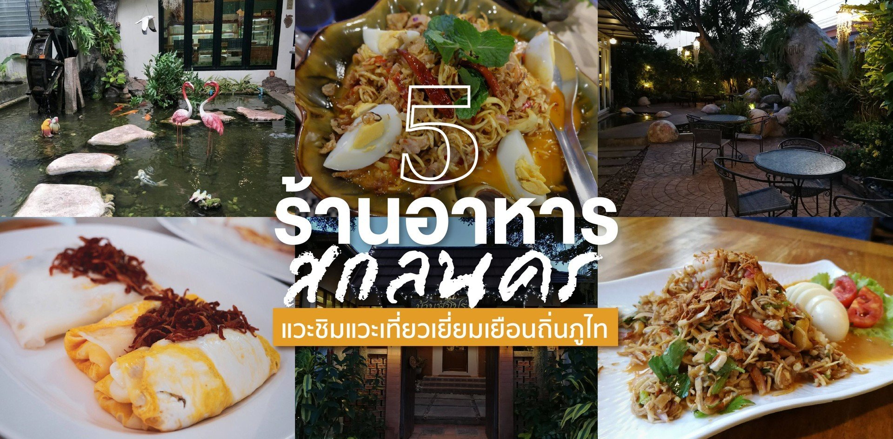
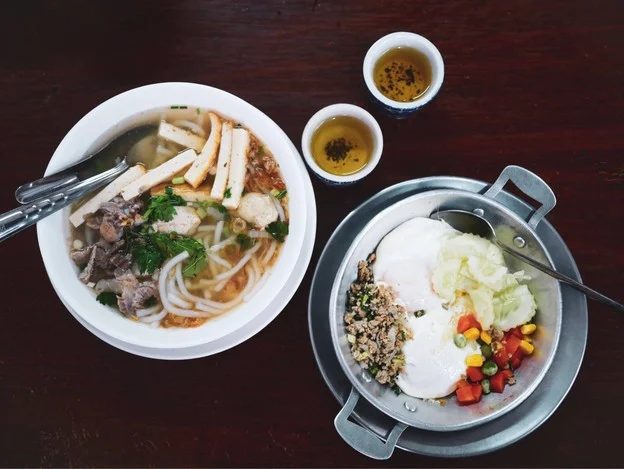
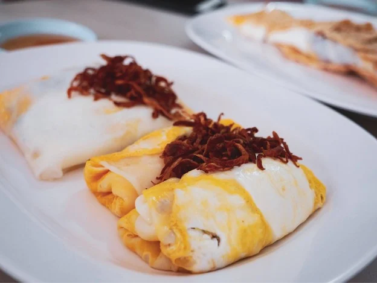
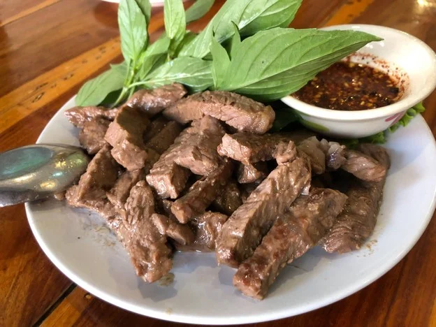

ร้านอาหาร สกลนคร
|  |
เลิศรสไข่กระทะ“ร้านอาหารสกลร้านนี้เป็นร้านเก่าแก่คู่เมืองสกลนครมานาน ลูกค้าที่มาก็สั่ง ก็จะสั่งเมนูอาหารง่าย ๆ เลย เช่นไข่กระทะกับขนมปังปิ้งที่เสิร์ฟมาพร้อมกับน้ำชาในการ้อน ๆดื่มในแก้วชาเล็ก ๆ ได้บรรยากาศสุดฟิน ในตอนเช้า ๆ นอกจากชาร้อน ก็ยังมีเมนูเครื่องดื่มอื่น ๆ อีกมากมาย” (Ning Paning) |
|  |
ข้าวเกรียบปากหม้อปารีส“ร้านอาหารสกลนครนี้ เป็นร้านปากหม้อเจ้าดังของสกลนครเลย มีหลากหลายรูปแบบ ร้านนี้ได้อาหารเร็วมาก แทบไม่ต้องรอเลย ข้าวเกรียบปากหม้อเป็นปากหม้อแป้งบาง ประกบด้วยข้าวเกรียบและไส้ตรงกลางเป็นไส้ปากหม้อทั่วไป จิ้มกับน้ำจิ้มหวานฟินแบบบอกไม่ถูก จานก็ใหญ่ กรอบ รสชาติดี แนะนำเลย คุ้มค่า ราคาสบายกระเป๋า ร้านดูสะอาด” |

|
บัวเงินเรสเตอรอง สว่างแดนดิน“อาหารก็อร่อย ราคาสบายกระเป๋า อาหารแต่ละเมนูในร้านอาหารสกลนครร้านนี้ แซ่บมาก ร้านนี้ทำออกมาได้ถูกปากถูกใจมาก ๆ ใส่ใจในทุกเมนู ทุกจานจริง ๆ ชอบมาก ๆ เป็นร้านเด็ดสกลนครที่ให้เต็มสิบไปเลย” |
บ้านฟ้าโปร่ง“ร้านอาหารสกลนครร้านนี้เปิดมาหลายปีแล้ว เมนูอาหารจะเน้นวัตถุดิบเพื่อสุขภาพ ไม่ใส่ผงชูรส และเลือกวัตถุดิบที่ดีต่อสุขภาพเท่านั้น ดังนั้นรสชาติอาจจะไม่จัดจ้าน อาหารสะอาด มีเมนูเยอะมาก จะตบท้ายด้วยเบเกอร์รี หรือเครื่องดื่มฟิน ๆ ก็มีครบ การบริการนั้นให้สิบ เรียกได้ว่ามาที่เดียวจบ” |
|
|  |
สะบันงา“ร้านอาหารสกลนครใกล้กับพระธาตุเชิงชุม เป็นร้านเก่าแก่ที่ถูกปากเราทุกเมนูจริง ๆ และราคาก็ไม่แพง เลยสั่งมาหลายอย่างเลย ที่เด่น ๆ ก็มี “ต้มยำแม่น้ำโขง” ปลาแม่น้ำโขง สด และรสชาติเนื้อปลาหวาน รสน้ำต้มยำเปรี้ยวหวานจัดจ้าน กับเมนู “ปลานึ่งจิ้มแจ่ว” เนื้อปลาชิ้นใหญ่ เนื้อหนา นึ่งสุกทั่วถึง รสชาติคล้ายเนื้อปลาส้มแต่ออกเค็ม กินกับผักสดลวก และแจ่วรสกลมกล่อม เป็นร้านอาหารสกลนครที่นักชิมแนะนำเลย” |
| สำนักงานจังหวัดสกลนคร |
| ที่อยู่ติดต่อ: ศาลากลางจังหวัดสกลนคร ต.ธาตุเชิงชุม อ.เมืองฯ จ.สกลนคร 47000 |
|
โทรศัพท์/โทรสาร: 042 711763
Email: sakonnakhon@moi.go.th |
| เว็ปหลักสกลนครhttp://sakonnakhon.go.th/2020/ |

|